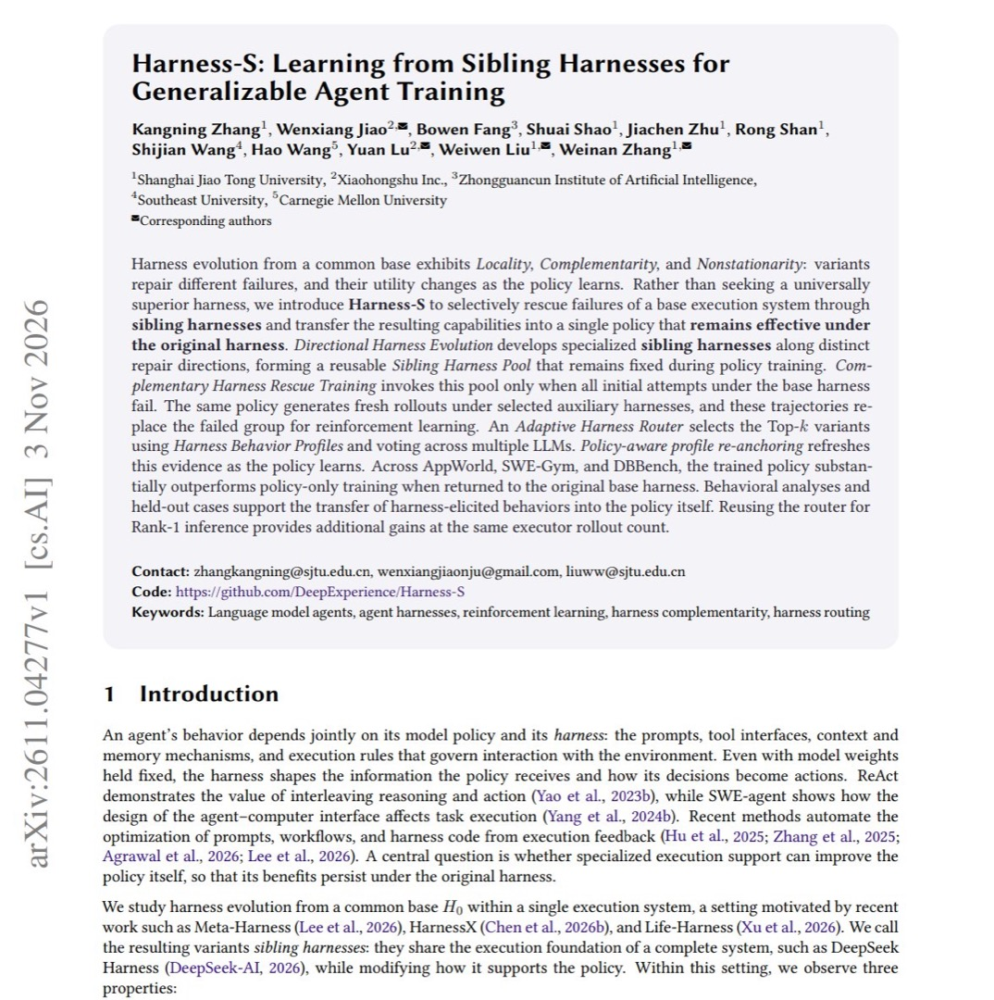
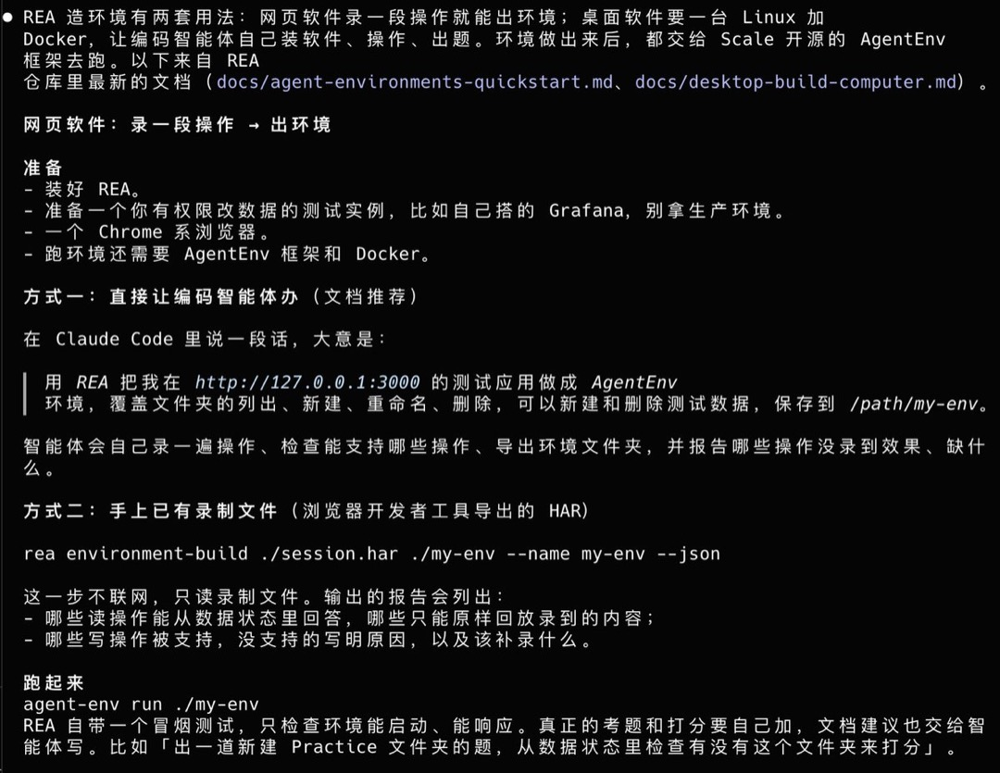

本期速览
01 Harness-S为GRPO补失败奖励
02 agent-skills固化编码工作流
04 DevTools MCP直连浏览器调试
06 Pi GPUI的Rust桌面客户端
07 YASAKANI单卡推理快过vLLM
01｜Harness-S为GRPO补失败奖励
来源（X） · @Xudong07452910 · 2026-11-14 11:47
这来自论文《Harness-S》，研究团队尝试利用不同 Harness 的互补能力，将外部执行环境带来的能力提升迁移到模型自身。
具体机制分为三个环节：
首先，从基础 Harness 的失败轨迹中分析原因，针对不同问题定向修改执行机制，构建一个各有所长的 Sibling Harness Pool。
训练时，模型先在原始 Harness 下多次尝试。如果全部失败，Adaptive Harness Router 就根据各 Harness 的历史表现和适用场景，选择最合适的几个重新探索，并将新轨迹用于 GRPO 训练。Router 还会随着模型能力变化，动态更新选择依据。
这个设计解决了一个关键问题：当 Agent 多次尝试全部失败，GRPO 很难获得有效的组内奖励信号。 不同 Harness 提供了新的成功路径，让模型有机会从失败任务中继续学习。
论文实验显示，Qwen3.5-4B 在原始 Harness 下的 SWE-Gym Pass@3，从普通 GRPO 的 24.38% 提升到 38.75%，提高了 14.37 个百分点。
所以 Harness 可以在训练阶段帮助模型突破能力边界，再通过强化学习，把这些执行经验逐渐转化为模型自身的能力。
📎 arXiv: https://arxiv.org/abs/2611.04277
💻 GitHub: https://github.com/DeepExperience/Harness-S

02｜agent-skills固化编码工作流
来源（X） · @xqliu · 2026-11-14 15:14
仓库叫 agent-skills，作者是 Addy Osmani。这周涨了 3502 星，总数到了 11.7 万，MIT 许可。
它把开发拆成六段：定义、计划、构建、验证、评审、上线，每段都有对应的斜杠命令。/spec 先把要做什么写清楚再动代码；/plan 把活切成很小的原子任务；/build 一次只做一片；/test 拿测试当证据，跑过了才算完成。
另外几个也实用：/webperf 先测量再优化，/code-simplify 要的是写得清楚，不是写得巧。最值钱的是 /constraints，质量标准定一次，之后每一步都按它卡。
按作者的说法，这些 Skill 记的是资深工程师的工作流和质量关卡，打包起来是为了让 agent 每个阶段都稳定照做。
agent 最常见的毛病就是一上来就写代码，一口气改一大片。这套东西正好反过来，把动手前和合并前那几步补了回去。
在 Claude Code 里它们是作为插件命令装进去的。/review 和自带命令重名，用的时候要带上命名空间。
03｜Graphify把代码库转成知识图谱
来源（X） · @ChuckBass14291 · 2026-11-14 09:25
📦 项目档案
项目：Graphify-Labs/graphify GitHub Stars：⭐ 147299 技术栈：Python + Tree-sitter + NetworkX + Leiden 核心定位：将代码、文档、SQL Schema、PDF、图片及音视频转换成可查询、可追溯的知识图谱，让 AI Agent 从「搜索文件」升级为「理解工程关系」。
GitHub：https://github.com/Graphify-Labs/graphify
🛠️ 一、底层架构：不是传统 RAG，而是图结构知识引擎
Graphify 最值得研究的地方，是它没有走传统向量检索路线。
传统 RAG 通常需要经历： 文件切分 → Embedding → 向量入库 → 相似度检索 → 上下文拼接。
Graphify 直接构建 Graph。
底层采用 NetworkX 图数据结构，以 Node 和 Edge 表达工程实体及其关系。
整个处理链路可以概括为：
detect() → extract() → build() → cluster() → analyze() → report() → export()
每个阶段职责独立，通过 Python Dict 和 NetworkX Graph 传递数据。
这意味着它不只是索引代码，而是在构建整个项目的结构化关系网络。
🛠️ 二、Tree-sitter AST：让代码解析摆脱 LLM 依赖
这是最有工程价值的设计。
Graphify 使用 Tree-sitter AST 解析约40种编程语言，提取：
• Classes：类定义及结构。 • Functions：函数与方法。 • Imports：模块依赖关系。 • Call Graph：跨文件函数调用。 • SQL：表、视图、外键及 JOIN 关系。
其中33种语言使用 Tree-sitter Grammar，另外7种使用内置解析器。
关键在于：代码结构提取完全在本地完成，不需要调用 LLM，也不需要把代码上传到云端。
对于大型代码库，这种确定性解析比单纯依赖模型阅读文件更容易复现和追踪。
🛠️ 三、EXTRACTED / INFERRED：让每条知识关系都有证据
很多知识图谱最大的隐患是：模型推断出来的关系，很容易被误认为真实事实。
Graphify 给关系增加了置信度标签：
• EXTRACTED：源码中明确存在的关系，例如 import、函数调用。 • INFERRED：通过上下文、命名和调用关系推断出来的连接。 • AMBIGUOUS：存在不确定性的关系，需要人工复核。
INFERRED 关系还会附带 0.0—1.0 的 confidence_score。
这套机制非常重要。
它实际上把知识图谱从一个简单的关联网络，变成了一个能够区分事实、推断与不确定性的工程知识系统。
🛠️ 四、Leiden + SHA256 Cache：解决规模与重复计算
Graphify 使用 Leiden 社区发现算法，根据节点之间的连接密度，将复杂工程拆分成不同功能子系统。
例如，一个大型后端项目，可以自动识别认证、数据库、路由、权限等不同社区。
同时，SHA256 内容哈希缓存会记录文件指纹。
文件没有变化，就跳过重复提取；只有新增或修改的文件才重新处理。
音视频还可以通过本地 faster-whisper 转录，再进入统一知识图谱。
这让增量更新不必每次重新扫描整个工程。
五、真正解决了什么工程问题？
想象一个场景：
你接手一个陌生的微服务项目，需要搞清楚：
用户认证最终连接了哪些数据库模块？
修改某个核心函数会影响哪些下游组件？
某个架构决策为什么会存在？
两个看似无关的模块究竟有什么隐藏依赖？
传统方式：Grep、Read、跳转、反复询问 Agent，消耗大量上下文。
Graphify：直接执行 query、path、explain。
它还能生成三个核心产物：
• graph.json：完整知识图谱，可供后续查询。 • GRAPH_REPORT.md：核心节点、社区及关键关系分析。 • graph.html：可交互的可视化图谱。
甚至支持 Mermaid 调用链导出、Markdown Wiki 和 Obsidian 知识库。
最重要的设计思想是：
不要让 AI 每次都重新阅读整个世界，而是提前把世界组织成它能够理解和遍历的结构。
这才是 AI Coding 从上下文堆砌走向工程知识管理的重要一步。
对于大型 Monorepo、遗留系统维护、跨模块依赖分析，以及需要长期理解代码库的 Agent，这套架构尤其值得研究。
🔗 GitHub 开源地址：
https://github.com/Graphify-Labs/graphify
04｜DevTools MCP直连浏览器调试
来源（X） · @kedaya · 2026-11-14 05:46
https://github.com/ChromeDevTools/chrome-devtools-mcp
05｜Scale AI用REA造97个训练环境
来源（X） · @wquguru · 2026-11-14 12:17
除了阿里、美团、微软、网易的工程师，动作最大的是 Scale AI 的工程师，他直接拿这个逆向工具做出了 97 个训练环境。
- 美团大模型团队给浏览器分析加了截图区域框选和区域比对
- 阿里的工程师让安装流程支持 Qwen Code
- 微软工程师修复了任务取消时的BUG
- 网易的工程师改了 JavaScript 分析性能优化、Electron、浏览器和安装流程
其他比如腾讯、亚马逊、谷歌、英伟达、小米、字节的工程师，以及逆向圈鼎鼎有名的 radare2 的作者 pancake 和 angr 第一大贡献者 Fish 也都来提过 issue 或 PR。
更离谱的是 Scale AI 的工程师，一口气提了68个issues和PR，让REA具备了造环境的功能。对于Agent开发者来说，这个造环境的功能非常关键，真系统测试成本太高，用REA给智能体搭建一套测试场就很有必要了。

引用内容
WquGuru @wquguru
这段现场视频看得我有点出神，观众隔着笼子看热闹也似乎很安全，但如果把视角切到网络安全，事情就严肃了。
全球网络安全联盟 GCSA 的研究团队，刚在一家头部机器人厂商的实机硬件上突破了设备的系统安全边界，拿到了操作系统的最高权限。这也意味着网络风险已经从软件和数据延伸到了物理世界。
看到视频里这种冲击力，买一台能自主移动的人形机器人放在家里，是保姆、保镖，还是刺客？
06｜Pi GPUI的Rust桌面客户端
来源（X） · @xqliu · 2026-11-13 20:25
它没有另造一个 agent，而是通过 RPC 调你机器上已经装好的 pi。模型、扩展、skill、会话都和终端里用的是同一套，攒下的东西不用搬。
作者在 M1 Pro 上测过：App 16 MB，窗口约 0.4 秒弹出，空闲时内存 75 MB 左右。作者对比的几个给 pi 用的 Electron 客户端，启动要 0.5 到 1.1 秒，内存 190 到 430 MB。测法和脚本都在仓库里。
README 的演示动图里，作者写明模型回复是预先写好的，为了方便重录；App 本身、改文件和跑 cargo test 都是真的。这句交代比跑分更值得信。
仓库 11 月 4 号才建，到今天 112 星，11 号刚发过一版，MIT 许可。
Mac 要 Apple 芯片、macOS 13 以上，一行装好： brew install --cask bytesbay/tap/pi-gpui
安装包有苹果的签名和公证。Linux 版还在 beta，官网给了一行安装脚本，不用 root。
07｜YASAKANI单卡推理快过vLLM
来源（X） · @neuronxwhite · 2026-11-14 11:54
日本一个个人开发者开源了 YASAKANI：只认 Windows 加一张 RTX 5090、只跑一个模型 Qwen3.8-27B。作者自测里它写代码 529 tokens/s，vLLM 是 290。今天发的 0.1.1 加了工具调用，编码 agent 可以直接连。
为什么快？因为不用兼容任何人。它是为一款显卡、一个模型手写的 GPU kernel 和压缩格式，质量模型 12.37GB，下载后完全离线。这个思路本身比软件有意思：vLLM、llama.cpp 为了照顾所有卡所有模型，牺牲了多少性能，没人单独算过。
我只读了 README，没跑过；那个对比条件（单请求、单卡）也是作者自己定的。
如果你正好用 vLLM 在一张卡上跑本地推理，去他仓库翻翻那几张测速表——你那边跑什么模型、多少 tokens/s？
https://github.com/yasakani-dev/yasakani